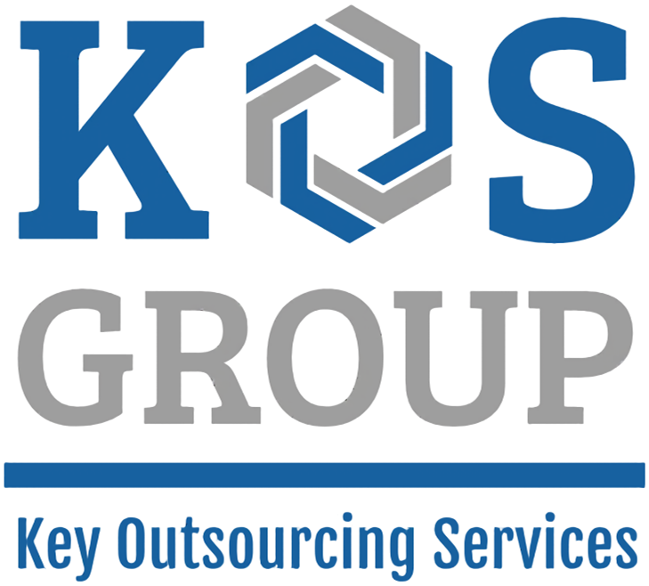
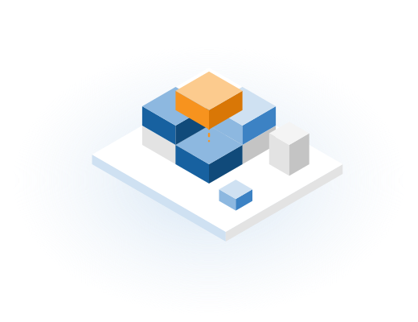
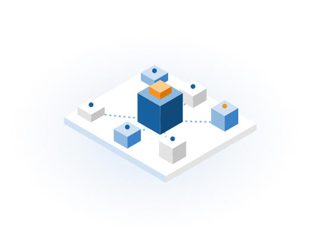
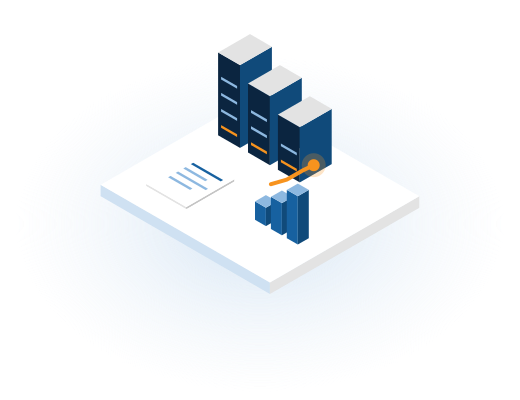
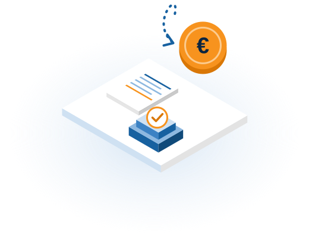
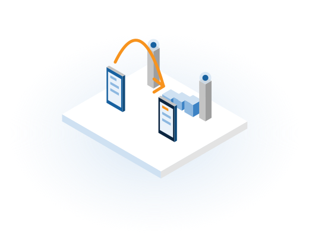

Hemos trabajado en operadores, consultoras y fabricantes. Hablamos tu idioma y entendemos tus números.

Planes de negocio, mercado y posicionamiento.
Viabilidad, rentabilidad y optimización de procesos.
Ingresos, costes y márgenes bajo control.
Software a medida, analítica y cuadros de mando.

CRM, tarificación, facturación y comisiones en una plataforma.

Facturación mayorista para operadores.

Recupera el IVA de las facturas impagadas.

El estado real de cada numeración, al momento.